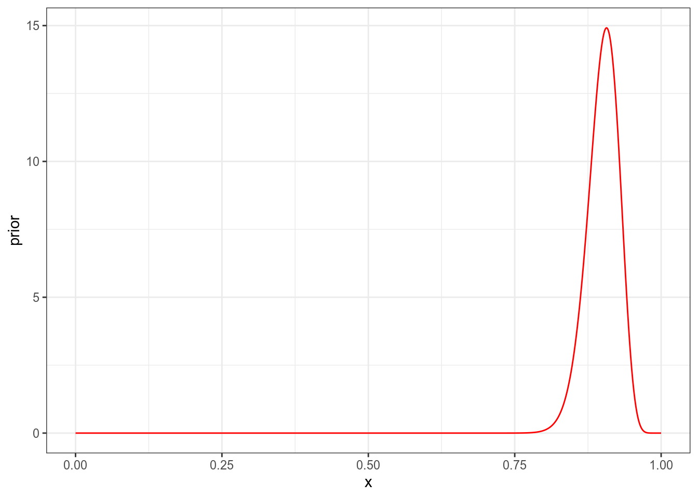
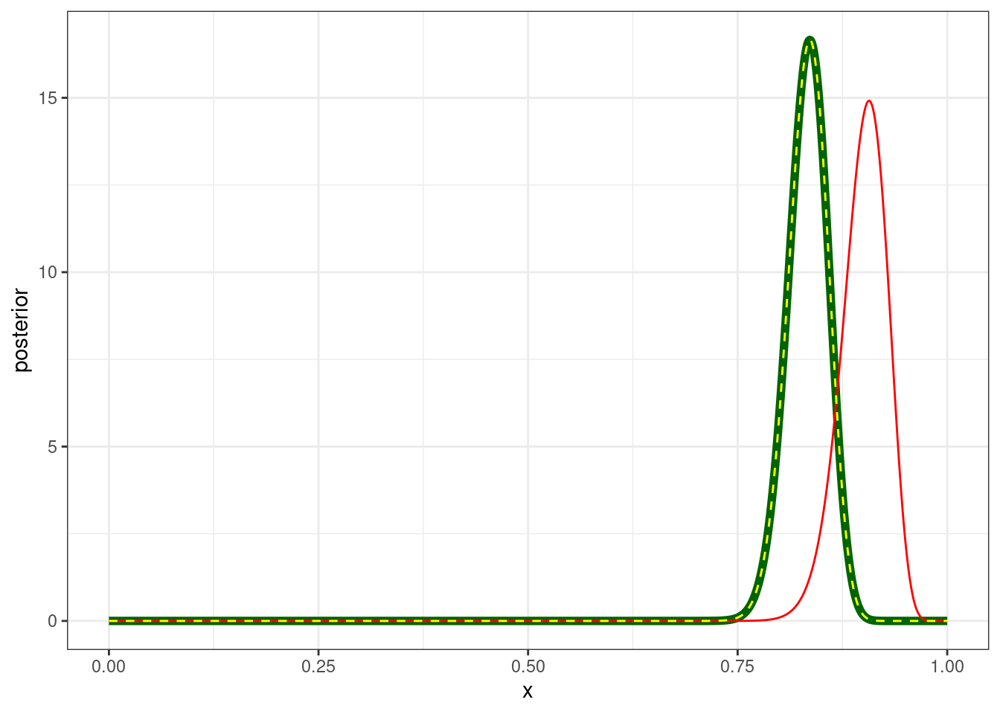
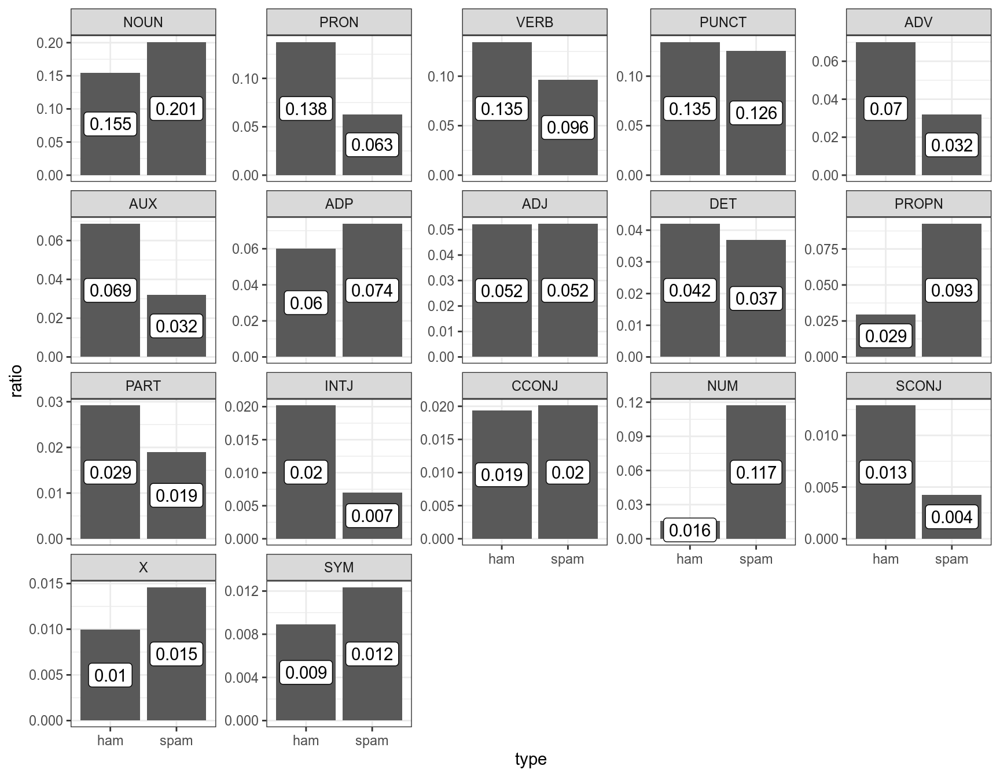

7 Коэффициент Байеса
7.1 Коэффициент Байеса
library(tidyverse)В прошлой лекции мы обсуждали значения правдоподобия. Важно понимать, что само по себе значение правдоподобия бессмысленно, оно важно для сравнения со значениями правдоподобия разных моделей. Представим, что мы пытаемся выбрать между двумя моделями:
- \(H_1 = X \sim \ln\mathcal{N}(\mu = 3,\, \sigma^{2}= 0.37)\)
- \(H_2 = X \sim \ln\mathcal{N}(\mu = 3.5,\, \sigma^{2}= 0.25)\)

L1 <- dlnorm(33, 3, 0.37)*dlnorm(26, 3, 0.37)
L2 <- dlnorm(33, 3.5, 0.25)*dlnorm(26, 3.5, 0.25)
L2/L1[1] 4.303835Как мы видим, на основании наших (фейковых) данных \(H_2\) в 4 раза более вероятнее, чем \(H_1\). Надо отметить, что не все тепло относятся к сравнению моделей (см. Gelman, Rubin 1994).
7.2 Формула Байеса опять
Представим себе, что у нас есть \(k\) гипотез \(M\). Тогда формула Байеса может выглядеть вот так:
\[P(θ|Data, M_k) = \frac{P(Data|θ, M_k) \times P(θ| M_k) }{P(Data|M_k)}\]
Коэффициент Байеса определяют как соотношение предельных правдоподобий (\(P(Data, M_k)\)) моделей (в принципе их может быть больше двух):
\[ BF_{12} = \frac{P(Data | M_1 )}{P(Data | M_2)} \]
Вычислять предельные правдоподобия порой достаточно сложно, так что иногда используют численную аппроксимацию.
7.3 Биномиальный вариант
Рассмотрим пример эксперимента Бернулли:
- мы посчитали количество букв “а” в рассказе А. П. Чехова и получили 58 букв из рассказа длинной 699 букв (пробелы и латинские буквы выкинуты);
- представим, что у нас есть две модели, соогласно одной мы ожидаем долю 0.08, а согласно другой 0.085.
Мы помним, что эксперимент Бернулли описывается биномиальным распределением:
\[P(k | n, p) = \frac{n!}{k!(n-k)!} \times p^k \times (1-p)^{n-k} = {n \choose k} \times p^k \times (1-p)^{n-k}\]
Так что в случае наших моделей будет:
\[P(Data | M_1) = {n \choose k} \times p^k \times (1-p)^{n-k} = {699 \choose 58} \times 0.08^{58} \times (1-0.08)^{699-58} = 0.0523985\]
dbinom(58, 699, prob = 0.08)[1] 0.0523985\[P(Data | M_2) = {n \choose k} \times p^k \times (1-p)^{n-k} = {699 \choose 58} \times 0.085^{58} \times (1-0.085)^{699-58} = 0.04402509\]
dbinom(58, 699, prob = 0.09)[1] 0.04402509Тогда коэфициент Байеса будет
BF_12 = dbinom(58, 699, prob = 0.08)/dbinom(58, 699, prob = 0.09)
BF_12[1] 1.190196
7.5 Дискретный вариант
Для примера обратися снова к датасету, который содержит спамерские и обычные смс-сообщения, выложенный UCI Machine Learning на kaggle и при помощи пакета udpipe токенизировал и определил часть речи:
sms_pos <- read_csv("https://raw.githubusercontent.com/agricolamz/2021_da4l/master/data/spam_sms_pos.csv")
glimpse(sms_pos)Rows: 34
Columns: 3
$ type <chr> "ham", "ham", "ham", "ham", "ham", "ham", "ham", "ham", "ham", "…
$ upos <chr> "ADJ", "ADP", "ADV", "AUX", "CCONJ", "DET", "INTJ", "NOUN", "NUM…
$ n <dbl> 4329, 5004, 5832, 5707, 1607, 3493, 1676, 12842, 1293, 2424, 114…sms_pos %>%
group_by(type) %>%
mutate(ratio = n/sum(n),
upos = fct_reorder(upos, n, mean, .desc = TRUE)) %>%
ggplot(aes(type, ratio))+
geom_col()+
geom_label(aes(label = round(ratio, 3)), position = position_stack(vjust = 0.5))+
facet_wrap(~upos, scales = "free_y")
Давайте полученные доли считать нашей моделью: сумма всех чисел внутри каждого типа (ham/spam) дает в сумме 1. Мы получили новое сообщение:
Call FREEPHONE 0800 542 0825 now!
Модель udpipe разобрала его следующим образом:
VERB NUM NUM NUM NUM ADV PUNCT
\[L(VERB,\ NUM|ham) = 0.135 \times 0.016 = 0.00216\]
\[L(VERB,\ NUM|spam) = 0.096 \times 0.117 = 0.011232\]
\[BF_{ham\ spam} = \frac{L(VERB,\ NUM|ham)}{L(VERB,\ NUM|spam)} = \frac{0.00216}{0.011232} = 0.1923077\]
7.6 Несколько точечных моделей
До сих пор мы рассматривали одну точечную модель, сравнивая доли 0.08 и 0.085.
- Мы посчитали количество букв “а” в рассказе А. П. Чехова и получили 58 букв из рассказа длинной 699 букв (пробелы и латинские буквы выкинуты);
- представим, что у нас есть две модели, соогласно одной мы ожидаем долю 0.08, а вторая модель состоит из 7 равновероятных моделей: 0.60 0.65 0.70 0.75 0.80 0.85 0.90.
Функцию правдоподобия для первой модели мы уже считали:
dbinom(58, 699, prob = 0.08)[1] 0.0523985Функция правдоподобия второй модели – это среднее функций правдоподобия всех входящих моделей:
mean(dbinom(58, 699, prob = seq(0.08, 0.085, 0.001)))[1] 0.05383749Байес фактор:
mean(dbinom(58, 699, prob = seq(0.08, 0.085, 0.001)))/dbinom(58, 699, prob = 0.08)[1] 1.027462Как видим, наша распределенная модель немного предпочтительнее, чем точечная.